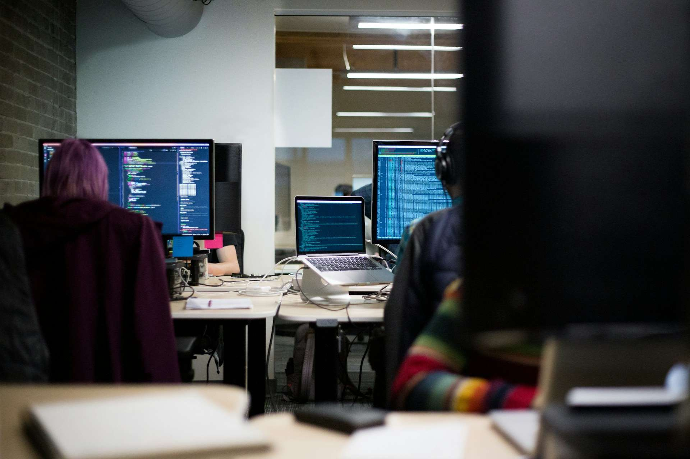

Desenvolvimento
- Ruby, Python e JavaScript
- Implementação de APIs RESTful, GraphQL e WebSockets
- Arquitetura de software para web
- Boas práticas de versionamento com Git
Resumo
Analista de Engenharia de Software e criador da Spacedevs
Profissional com foco em desenvolvimento de software, educação em tecnologia e construção de produtos digitais com impacto social. Experiência em ecossistema web moderno, colaboração com comunidades open source e liderança de iniciativas de formação para jovens talentos.
Local
Salvador, Bahia
Cargo
Analista de Engenharia de Software II
Foco
Web, Educação e OSS
Competências
Portfolio
Experiencia Profissional
Projeto Autoral
Open Source
Meus Portfólios
Alguns trabalhos que refletem minha atuação com produto, educação tecnológica e construção de soluções digitais com impacto.

EdTech
Desenvolvimento de ambiente digital para trilhas de programação, acompanhamento de alunos e gestão de turmas.
Ver portfólioImpacto Social
Implementação de iniciativas de formação em tecnologia para jovens de escolas públicas com foco em empregabilidade.
Ver iniciativaOpen Source
Contribuições em projetos públicos com boas práticas de engenharia, documentação e colaboração em comunidade.
Ver no GitHubAtualização constante em engenharia de software, arquitetura web e práticas modernas de desenvolvimento, com foco em excelência técnica e impacto social.
Contribuir para a construção de produtos digitais escaláveis e para a formação de novos talentos na tecnologia, unindo performance técnica, colaboração e propósito.